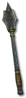

Heyday

Lesson in Pain
Mace
Damage: 3-10
Required Level: 13
+100-150% Enhanced Weapon Damage
Level 3-5 Thorns Aura When Equipped
25% chance to cast level 3 Amplify Damage when struck
Adds 5-15 Damage
+1 to Paladin Skill Levels
Unique Mace
Lesson in Pain
- Type
- Mace
- Base
- Mace
- Tier
- Normal
- Required level
- 13
- Item level
- 1
- Required strength
- 27
- Max sockets
- 2